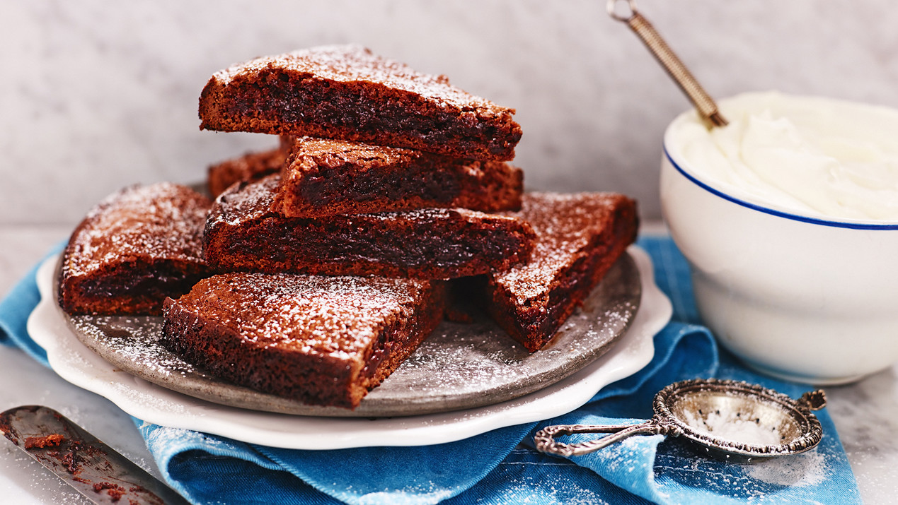

Kladdkaka
Tillbaka

Ingredienser━━━━━
• Smör (100g)
• 2½ dl Strösocker (ca. 225g)
• 2 Ägg (ca. 126g)
• 1 dl Vetemjöl (ca. 60g)
• 3 msk Kakao (ca. 18g)
• 1 tsk Vaniljsocker (ca. 3g)
Gör så här━━━━━
• Sätt ugnen på 175° eller 160° varmluft.
• Smält smöret i en kastrull. Lyft av kastrullen från plattan.
• Rör ner socker och ägg, blanda väl. Rör ner övriga ingredienser så att allt blir väl blandat.
• Häll smeten i en smord och bröad form med löstagbar kant, ca 24 cm i diameter.
• Grädda mitt i ugnen ca 15 min. Kakan blir låg med ganska hård yta och lite kladdig i mitten.
• Låt kakan kallna. Pudra över florsocker. Servera med grädde eller glass och frukt.